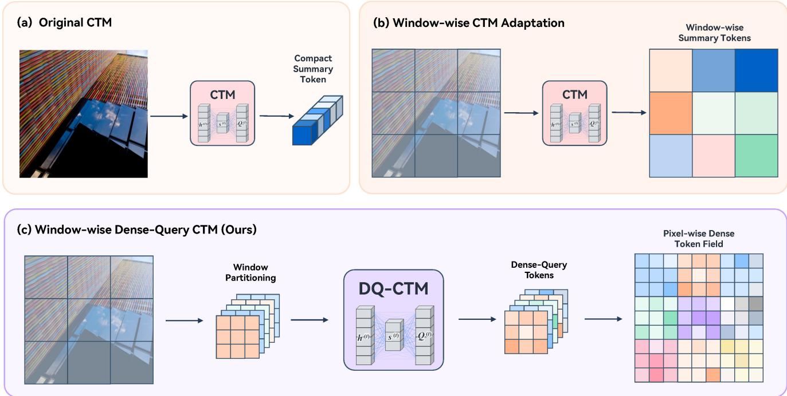
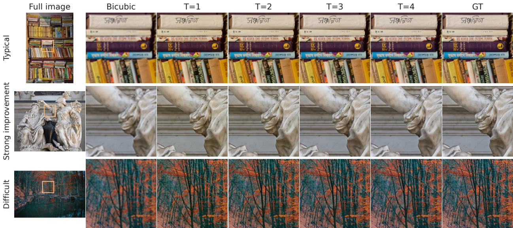

What came before
Two earlier answers, and what each gives up
CTM
a compact thought state
no spatial field at all
Window-wise
one summary token per window
position is pooled away
This work
one query per position
the field survives every tick
The three differ only in what each hands the thought block.
Method
One pass in, one pass out, and a loop in the middle
Parameters are shared across every tick.
Architecture
Every window keeps its own position-wise query

Figure 1 — CTM, a window-wise adaptation, and DQ-CTM compared.
Representation
Attention is computed inside windows, and no token is pooled away
Token count is identical before and after the update.
1 · Persistent dense carrier
The encoder makes the field; the partition keeps it
1 · Persistent dense carrier
Substituting the carrier leaves one composition
2 · Compact thought
The thought state is a stack the carrier is read through
3 · One dense tick
One tick reads the carrier and adds its update back

A persistent dense carrier, read and updated by a compact thought process.
Figure 2 — One DQ-CTM tick: the compact thought path above, the dense key-value path below.
Cost
The method is mid-pack on parameters, not the smallest
Smaller is better; DQ-CTM-SR is second largest here.
Quantitative comparison · ×4
Competitive with CNN baselines, behind recent models
| Method | Params | Average |
|---|---|---|
| CARN | 1.592M | 28.970 |
| IMDN | 0.715M | 28.968 |
| RFDN | 0.550M | 29.022 |
| CATANet | 0.535M | 29.482 |
| DQ-CTM-SR | 1.129M | 28.983 |
Comparison figures are quoted from their papers; only DQ-CTM-SR was trained here.
Thought sweep · 100 validation images
Each extra tick buys less than the one before it
Trained to T=4. Nothing beyond it is demonstrated.
Qualitative
Where the ticks help, and where they do not
Rows are the same three crops in both: typical, strong improvement, difficult.
What it does not do
Competitive, and still short of the best lightweight models
the gap
CATANet averages 29.482
this method 28.983
the ceiling
each tick buys less
flat after about four
the reporting
abstract says 28.10 → 30.28
the table says 28.91 → 30.47
The body claims a 1.4611 dB gain where its own table gives 0.59 dB.
What to take away
A carrier that survives every tick is enough to compete
A dense carrier held across ticks and read by a compact thought process matches CNN baselines at a comparable parameter count.

Figure 4 — Reconstruction at T=0 through T=4 against bicubic and ground truth.